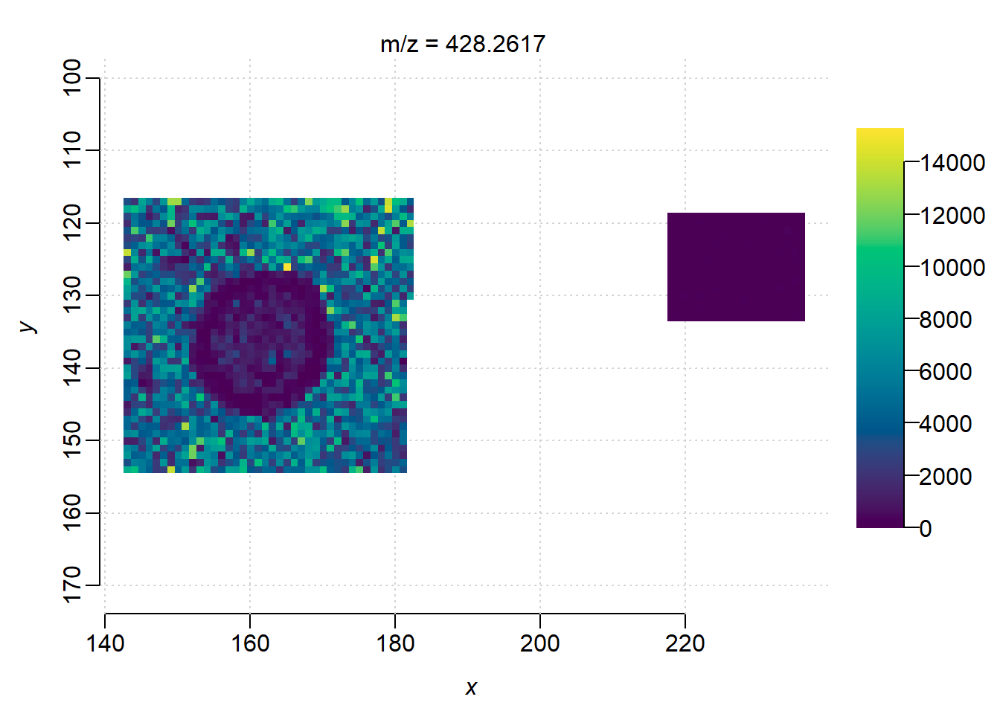

if (!require("BiocManager", quietly = TRUE))
install.packages("BiocManager")
BiocManager::install("Cardinal")
package.install("spaMM")
package.install("ggplot2")3 Differential abundance analysis in R
3.1 Introduction
In this part, we continue to perform differential abundance analysis on the processed imzML from Section 1 to find precursors that present high intensity in the microbial culture region. First we apply a non-spatial linear fixed effects model, then explore modeling with spatial correlation. In addition, we also contrast differential analysis on features with and without ion mobility.
3.1.1 Package setup
We will use Cardinal for data import and normalization, spaMM for differential analysis and ggplot2 for visualization. If the packages are not yet installed, run following code in a R session:
Then load the packages:
library(Cardinal)
library(spaMM)
library(ggplot2)3.1.2 Load processed dataset
First we load the processd imzML from TIMSImaging into Cardinal:
msa <- readMSIData("D:\\dataset\\Laura_Gordon\\laura_gordon.imzML", as="MSImagingArrays", extraArrays=c(mobility="MS:1003006"))
mse <- convertMSImagingArrays2Experiment(msa)
mseMSImagingExperiment with 781 features and 12173 spectra
spectraData(1): intensity
featureData(1): mz
pixelData(3): x, y, run
coord(2): x = 37...236, y = 31...154
runNames(1): laura_gordon
experimentData(5): spectrumType, spectrumRepresentation, lineScanSequence, scanType, lineScanDirection
mass range: 172.0402 to 1094.0830
centroided: TRUE check the regions:
image(mse)
3.1.3 Data preparation
Then we label 3 microbioal regions as a group(culture) and the matrix region as the other group(media), which is consistent with the literature.
coords <- coord(mse)
pixel_label <- ifelse(coords$x > 200 & coords$y > 100, "media", "culture")
pData(mse)$label <- factor(pixel_label)
pData(mse)PositionDataFrame with 12173 rows and 4 columns
x y run label
<numeric> <numeric> <factor> <factor>
spectrum=1 46 31 laura_gordon culture
spectrum=2 47 31 laura_gordon culture
spectrum=3 48 31 laura_gordon culture
spectrum=4 49 31 laura_gordon culture
spectrum=5 50 31 laura_gordon culture
... ... ... ... ...
spectrum=12169 232 133 laura_gordon media
spectrum=12170 233 133 laura_gordon media
spectrum=12171 234 133 laura_gordon media
spectrum=12172 235 133 laura_gordon media
spectrum=12173 236 133 laura_gordon media
coord(2): x, y
run(1): runTo reduce the complexity of spatial modeling, we just compare the G.arilaitensis(bottom middle) region(culture) and the media/matrix region(media). For targets in following MS2 acquisition, we want to exclude matrix/media ions and select precursors spatially associated with the microbioal culture region. Specifically, a desired precursor should present high intensity in the microbioal culture region and minimum intensity in the matrix/media region.
mse_subset <- subsetPixels(mse, x>120, y>100)
image(mse_subset)
First we try differential abundance analysis on a feature(mz=428.26) reported in the paper. Extract the ion image as a data frame, with pixels labeled as either in ‘media’ or ‘culture’ region.
m <- 428.26
i <- findInterval(m, mz(mse_subset))+1
intensity <- spectraData(mse_subset)$intensity[i,]
df <- data.frame(
intensity = intensity,
label = pData(mse_subset)$label,
x = pData(mse_subset)$x,
y = pData(mse_subset)$y
)
# set the media group as the baseline
df$label <- relevel(df$label, ref="media")Plot its ion image:
image(mse_subset, i=i)
3.1.4 Fitting a non-spatial model
Now we fit a non-spatial linear fixed effect model on this feature. Let \(s\) be a pixel position, \(k\) be a group label, then the intensity is a linear response to group label: \[y_s=\mu_k+\varepsilon_s\] where \(y_s\) is the intensity at \(s\), the fixed effect \(\mu_k\) is the mean intensity in group \(k\), \(\varepsilon_s\) is the random error.
model <- fitme(
intensity ~ label,
data = df,
method = "REML",
)
summary.HLfit(model, details=c(p_value="Wald"))formula: intensity ~ label
Estimation of fixed effects by ML.
Estimation of phi by 'outer' REML, maximizing restricted logL.
family: gaussian( link = identity )
------------ Fixed effects (beta) ------------
Estimate Cond. SE t-value p-value
(Intercept) 35.59 162.1 0.2195 0.8263
labelculture 4070.59 176.9 23.0093 0.0000
-------------- Residual variance ------------
phi estimate was 7492370
------------- Likelihood values -------------
logLik
logL : -16622.21
log restricted-lik : -16611.02The result shows that ion m/z=428.26 present higher intensity in the culture region(labelculture) than the media region(intercept) with high significance score. However, in the non-spatial modeling the pixels were considered as independent samples, which is not true(pixels are highly correlated), the degree of freedom is overstimated and resulted in extremely small p-vales(type-I error).
3.1.5 Fitting a spatial model
Next, we try a spatial linear mixed effect model with Matern correlation. The model could be expressed as \[y_s=\mu_k+U_s+\varepsilon_s\] where \(y_s\) is the intensity at \(s\), the fixed effect \(\mu_k\) is the mean intensity in group \(k\), the random effect \(U_s\) is the Matérn random field at \(s\), and \(\varepsilon_s\) is the random error.
model <- fitme(
intensity ~ label + Matern(1|x+y),
data = df,
method = "REML",
)
summary.HLfit(model, details=c(p_value="Wald"))formula: intensity ~ label + Matern(1 | x + y)
REML: Estimation of corrPars, lambda and phi by REML.
Estimation of fixed effects by ML.
Estimation of lambda and phi by 'outer' REML, maximizing restricted logL.
family: gaussian( link = identity )
------------ Fixed effects (beta) ------------
Estimate Cond. SE t-value p-value
(Intercept) 26.59 1347 0.01974 0.9842505
labelculture 5279.35 1578 3.34540 0.0008216
--------------- Random effects ---------------
Family: gaussian( link = identity )
--- Correlation parameters:
1.nu 1.rho
0.19882987 0.04176932
--- Variance parameters ('lambda'):
lambda = var(u) for u ~ Gaussian;
x + y : 5112000
# of obs: 1781; # of groups: x + y, 1781
-------------- Residual variance ------------
phi estimate was 3272180
------------- Likelihood values -------------
logLik
logL (p_v(h)): -16315.52
Re.logL (p_b,v(h)): -16299.60The spatial model also shows the differential abundance between two regions, but with more reasonable p-value.
###Fitting non-spatial and spatial model on all features Then we can loop over all features by fitting a model on each of them:
nonspatial_de <-function(mse){
mz_values <- mz(mse)
fit_results <- lapply(seq_along(mz_values), function(i) {
intensity_i <- spectraData(mse)$intensity[i, ]
# create a subset data frame
sub_df <- data.frame(
intensity = intensity_i,
label = pData(mse)$label,
x = coord(mse)$x,
y = coord(mse)$y
)
# set the media group as the baseline
sub_df$label <- relevel(sub_df$label, ref="media")
# fit a linear fixed effect model
model <- tryCatch({
fitme(intensity ~ label,
data = sub_df,
method = "REML")
}, error = function(e) NULL)
# summarize the results
if (!is.null(model)) {
#coefs <- fixed.effects(model)
stats <- summary.HLfit(model, details=c(p_value="Wald"), verbose=FALSE)[['beta_table']]
return(data.frame(
mz = mz_values[i],
index = i,
intercept = stats[1,1],
label_effect = stats[2,1],
t_value = stats[2,3],
p_value = stats[2,4]
))
} else {
return(NULL)
}
})
# combine all results
fit_results_df <- do.call(rbind, fit_results)
fit_results_df$intensity <- fit_results_df$intercept+fit_results_df$label_effect
fit_results_df$log2_foldchange <- log2((fit_results_df$intercept+fit_results_df$label_effect)/fit_results_df$intercept)
fit_results_df$neg_log10_p <- pmin(-log10(fit_results_df$p_value), 20)
return(fit_results_df)
}Summarize the results:
fit_results_df <- nonspatial_de(mse_subset)
head(fit_results_df, 10) mz index intercept label_effect t_value p_value intensity
1 172.0402 1 2743.7439 -1577.9945 -16.517216 0 1165.7493
2 187.0550 2 1008.0175 887.5974 13.303868 0 1895.6150
3 189.0707 3 2753.1754 1225.5625 10.933209 0 3978.7380
4 190.0508 4 1054.0000 -403.6845 -13.734408 0 650.3155
5 201.0593 5 754.3474 813.6653 14.013560 0 1568.0127
6 202.0783 6 777.3088 654.8363 13.810138 0 1432.1451
7 203.0734 7 776.4386 601.9418 13.041554 0 1378.3803
8 204.0812 8 1640.6281 1148.1520 13.707021 0 2788.7801
9 205.0654 9 1014.4842 374.1428 8.819151 0 1388.6270
10 214.0656 10 4392.1018 4708.4363 14.635449 0 9100.5381
log2_foldchange neg_log10_p
1 -1.2348882 20
2 0.9111452 20
3 0.5312143 20
4 -0.6966631 20
5 1.0556363 20
6 0.8816179 20
7 0.8280303 20
8 0.7653860 20
9 0.4529127 20
10 1.0510404 20Here is the code for spatial model:
spatial_de <- function(mse){
mz_values <- mz(mse)
fit_results <- lapply(seq_along(mz_values), function(i) {
message("Fitting feature", i)
intensity_i <- spectraData(mse)$intensity[i, ]
sub_df <- data.frame(
intensity = intensity_i,
label = pData(mse)$label,
x = coord(mse)$x,
y = coord(mse)$y
)
sub_df$label <- relevel(sub_df$label, ref="media")
model <- tryCatch({
fitme(intensity ~ label + Matern(1|x+y),
data = sub_df,
fixed = list(nu=0.5),
control.HLfit = list(algebra="spcorr", NbThreads=8),
method = "REML")
}, error = function(e) NULL)
if (!is.null(model)) {
coefs <- fixed.effects(model)
stats <- summary.HLfit(model, details=c(p_value="Wald"), verbose=FALSE)[['beta_table']]
return(data.frame(
mz = mz_values[i],
intercept = coefs[1],
label_effect = coefs[2],
t_value = stats[2,3],
p_value = stats[2,4]
))
} else {
return(NULL)
}
})
fit_results_df <- do.call(rbind, fit_results)
fit_results_df$log2_foldchange <- log2((fit_results_df$intercept+fit_results_df$label_effect)/fit_results_df$intercept)
fit_results_df$neg_log10_p <- pmin(-log10(fit_results_df$p_value), 20)
return(fit_results_df)
}It takes hours to run the spatial model on all the features. For presentation here we load the pre-computed results:
fit_results_df_sp <- read.csv("D:\\dataset\\Laura_Gordon\\spatial_model_results.csv")
head(fit_results_df_sp, 10) mz intercept label_effect t_value p_value log2_foldchange
1 172.0402 2870.8918 -1852.1692 -3.813199 0.0001371793 -1.4947377
2 187.0550 1032.1892 1143.4519 2.324345 0.0201070065 1.0757331
3 189.0707 3142.2868 1406.1612 1.569304 0.1165770829 0.5335595
4 190.0508 1066.5681 -513.1645 -2.867744 0.0041340929 -0.9465722
5 201.0593 826.7352 983.1938 2.384268 0.0171131320 1.1304359
6 202.0783 916.4583 686.2478 1.955258 0.0505525712 0.8063687
7 203.0734 913.1006 671.3881 2.131018 0.0330876572 0.7951717
8 204.0812 1765.4276 1434.6161 2.329726 0.0198206294 0.8580740
9 205.0654 1267.1642 472.7607 1.076814 0.2815634507 0.4574216
10 214.0656 5172.3841 5307.5780 2.215906 0.0266979208 1.0187322
neg_log10_p
1 3.8627114
2 1.6966526
3 0.9333868
4 2.3836198
5 1.7666705
6 1.2962568
7 1.4803340
8 1.7028826
9 0.5504237
10 1.5735226Now we can visualize the results with volcano plots.
volcano_plot <- function(df){
p <- ggplot(df, aes(x = log2_foldchange, y = neg_log10_p)) +
geom_point(alpha = 0.7) +
geom_hline(yintercept = -log10(0.05), color = "red", linetype = "dashed") + # p=0.05 threshold
geom_vline(xintercept = 0, color = "blue", linetype = "dotted") +
labs(
title = "Volcano Plot of m/z Features",
x = "log2(fold change)",
y = "-log10(p-value)"
) +
coord_cartesian(xlim = c(-5, 5), ylim=c(0,20)) +
theme_minimal()
return(p)
}volcano_plot(fit_results_df)
volcano_plot(fit_results_df_sp)
The spatial modeling resulted in a more reasonable volcano plot. Points on the top right(significantly up-expressed in the microbial culture region with high fold change) are the candidate precursors. For example,
selected_precursors <- subset(fit_results_df_sp, (log2_foldchange>2) & (p_value<0.05))
selected_precursors <- selected_precursors[order(selected_precursors$neg_log10_p, decreasing = TRUE),]
head(selected_precursors, 10) mz intercept label_effect t_value p_value log2_foldchange
294 439.2909 87.68310 699.8994 12.207582 0.000000e+00 3.167060
319 457.2630 81.43585 1054.3189 8.500808 0.000000e+00 3.801844
446 545.2354 65.71369 419.6170 5.524842 3.297832e-08 2.884702
374 491.2311 37.80553 402.0757 5.512629 3.535136e-08 3.540445
367 488.2501 53.84855 1369.3657 5.479604 4.262793e-08 4.724101
328 461.2725 56.87537 832.7660 5.385277 7.233332e-08 3.967348
353 479.2486 141.22950 1343.3214 5.332992 9.660731e-08 3.393913
409 523.2550 105.22080 676.1195 5.165406 2.399180e-07 2.892531
397 510.2310 77.99742 1913.4726 5.090496 3.571283e-07 4.674263
292 439.1950 99.20545 4620.6606 4.890073 1.007983e-06 5.572183
neg_log10_p
294 50.000000
319 50.000000
446 7.481772
374 7.451594
367 7.370306
328 7.140662
353 7.014990
409 6.619937
397 6.447176
292 5.996547Plot ion images for some example precursors with differential abundance:
indices = as.numeric(row.names(selected_precursors)[1:6])
image(mse_subset, i=indices)
3.1.6 Processing TIMSCONVERT data
In order to show ion mobility also benefits differential abundance analysis, we contrast the results from processing without ion mobility.
msa_timsconvert <- readMSIData("D:\\dataset\\Laura_Gordon\\250321_JB182_Pen12.imzML")
mse_timsconvert_binned <- bin(msa_timsconvert, resolution=20, units="ppm")
centroided(mse_timsconvert_binned)<-FALSE
set.seed(42, kind="L'Ecuyer-CMRG")
peaks_timsconvert <- peakProcess(mse_timsconvert_binned, SNR=6, tolerance=400, units="ppm")Then we filtered the features by intensity and got 378 features.
peaks_timsconvert <- summarizeFeatures(peaks_timsconvert)
max_intensity <- max(fData(peaks_timsconvert)$mean)
intensity_filter <- fData(peaks_timsconvert)$mean > 0.01*max_intensity
peaks_timsconvert <- subsetFeatures(peaks_timsconvert, select=intensity_filter)
peaks_timsconvertMSImagingExperiment with 378 features and 12173 spectra
spectraData(1): intensity
featureData(4): mz, count, freq, mean
pixelData(3): x, y, run
coord(2): x = 37...236, y = 31...154
runNames(1): 250321_JB182_Pen12
metadata(2): processing_20260106133523, processing_20260106133624
experimentData(5): spectrumType, spectrumRepresentation, lineScanSequence, scanType, lineScanDirection
mass range: 172.0407 to 1095.0892
centroided: TRUE Here is the code to run spatial-aware differential abundance analysis on these features, for time being we also use pre-computed results.
pData(peaks_timsconvert)$label <- factor(pixel_label)
peaks_timsconvert_subset <- subsetPixels(peaks_timsconvert, x>120, y>100)
fit_results_df_timsconvert <- nonspatial_de(peaks_timsconvert_subset)fit_results_df_timsconvert <- read.csv("D:\\dataset\\Laura_Gordon\\spatial_timsconvert.csv")Next we find the matching features between with and without ion mobility. Since there could be multiple isobaric features differentiated by ion mobility and detected by TIMSImaging, a mz_noim value might match with multiple mz_im values.
mz_im <- fit_results_df_sp$mz
mz_noim <- fit_results_df_timsconvert$mz
idx <- sapply(mz_im, function(v) which.min(abs(mz_noim - v)))
spatialde_results <- data.frame(
mz_im = mz_im,
mz_noim = mz_noim[idx],
mob = spectraData(msa)$mobility$'spectrum=1',
tolerance = (mz_im-mz_noim[idx])/mz_im,
fc_im = fit_results_df_sp$log2_foldchange,
fc_noim = fit_results_df_timsconvert$log2_foldchange[idx],
pvalue_im = fit_results_df_sp$neg_log10_p,
pvalue_noim = fit_results_df_timsconvert$neg_log10_p[idx]
)
# find features with high fold change
spatialde_results <- subset(spatialde_results, (abs(tolerance)<5e-5) & (fc_im>1))
head(spatialde_results, 10) mz_im mz_noim mob tolerance fc_im fc_noim pvalue_im
10 214.0656 214.0648 0.6694399 3.764268e-06 1.018732 1.0773983 1.573523
11 215.0710 215.0724 0.6675574 -6.546154e-06 1.030314 1.0101238 1.560817
18 227.0735 227.0738 0.6857717 -1.464568e-06 1.252852 1.2403257 1.656022
19 228.0797 228.0818 0.6865217 -8.946302e-06 1.211128 1.0259938 1.838233
20 229.0762 229.0776 0.6973090 -5.781674e-06 2.196807 2.5045678 2.060626
32 241.0760 241.0707 0.7123838 2.184876e-05 2.170429 2.0054843 2.216579
46 256.0758 256.0762 0.7366803 -1.479089e-06 1.081612 1.1283892 1.865507
48 257.0697 257.0766 0.7420743 -2.689380e-05 2.049206 0.9206352 2.151130
49 257.0804 257.0766 0.7354503 1.487710e-05 1.222383 0.9206352 1.684749
51 258.0785 258.0811 0.7425315 -9.830324e-06 1.888017 1.9253027 2.351527
pvalue_noim
10 1.683095
11 1.575105
18 1.509311
19 1.363297
20 1.913232
32 2.152838
46 1.768733
48 1.820350
49 1.820350
51 2.255194Now we can contrast the p-values for matched features. The x axis is the p-value processing without ion mobility, and the y axis is correponding ion moblity-aware p-value. Most points are above the diagonal, showing that the ion mobility-aware approach of TIMSImaging produced smaller p-values for differential abundance analysis.
ggplot(spatialde_results, aes(x = pvalue_noim, y = pvalue_im)) +
geom_point(alpha = 0.7) +
geom_abline(intercept = 0, slope = 1, color = "red", linetype = "dashed")+
labs(
title = "Contrast of p-values",
x = "without ion mobility",
y = "with ion mobility"
) +
coord_fixed(ratio=1, xlim = c(0, 10), ylim=c(0,10))